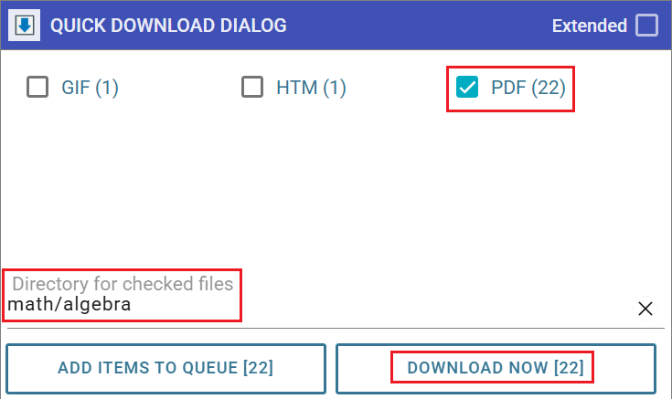
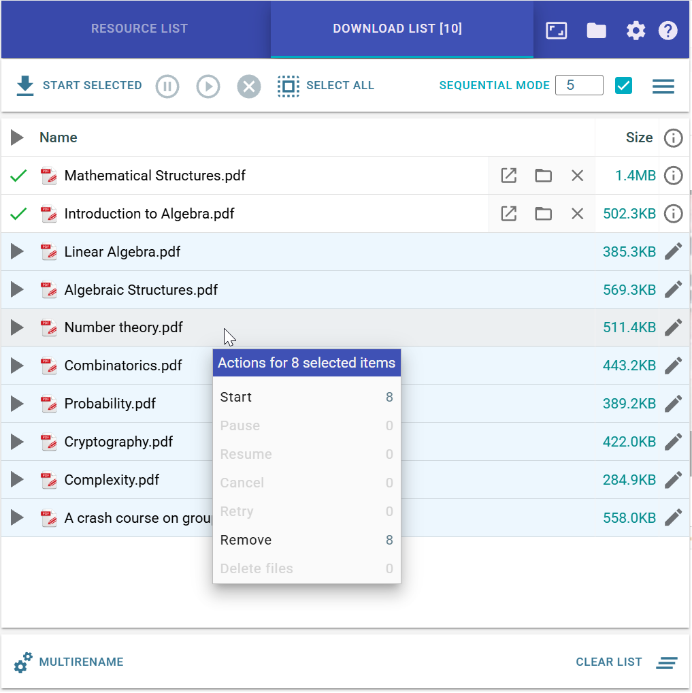

Quick Start Tutorial
Simple Mass Downloader is especially useful when mass downloading requires careful identification of resources on a web page, using appropriate filtering, as well as suitable file names and destination folders.
Unlike an external download manager, SMD can use contextual information from . These attributes can be used for both filtering and constructing suitable names for downloaded files or destination folders, through
Note that destination folders are relative to Chrome’s
main Downloads folder. For security
reasons, Chrome extensions cannot choose an arbitrary folder path for mass downloads. For
example,
math/algebra means Downloads/math/algebra.
The basic workflow
The simpler workflow uses a mini dialog opened by the standard context menu on the web page. You can use it for
- the whole page
- an individual link or image
- a selected range of text containing links
Here you check the desired file types, set optionally a destination folder and finally click the
Download now button
Note that there is an of this Quick download dialog with more options (filtering, name masking
etc.)

The main popup workflow
The main advantage over the Quick Download Dialog is that each item’s associated
information is visible. A full is available with right-click in the
Resource List, or Ctrl+right-click in the Download List.
- Click the button to load all the links/resources from the current tab
- Select/check from the generated resources list the desired ones
- Click to download them immediately or to add them to the delayed download queue
The resource list
- (using default and )
Other optional but useful steps:
- Set a . The directory field has an with recently used folders and, optionally, user-defined .
-
Set a for all selected/checked files. In the
example on the left, the name mask
{text}.{ext}is preferred because it creates more descriptive names. For example, the first item becomesFinite geometry and coding theory.pdf, while the default{auto}, usually equivalent to{name}.{ext}, would producefgct.pdf.

Besides the list view shown above, there is also
a for images, with specific
width/height
filters and a button to sort by descending size.
The download list
As noted earlier, items can be sent to the Download List either with to start downloading immediately, or with to add them to the delayed download queue.
The first option is usually preferred, but the delayed queue is useful when you need to refine
items at the Download List level before starting them. There you can use the
for more advanced batch actions, including name masks, search-and-replace rules, and preview
changes. Unstarted items can also be reordered with Ctrl + Up/Down, which is
especially useful when using counter masks.
You can also make finer adjustments for individual items using the .
The Download List also provides the usual download management actions: start items individually or in groups, pause, resume, cancel, or remove them.

A special note about Sequential mode: this is a global setting. When enabled, queued
downloads start one by one, with a customizable interval between them (default: 3 seconds). This reduces
pressure on the server and can help prevent stalls.
 or
or  )
and cannot be sent to the download list again unless they are first removed from it. In
general, you
should not worry about sending the same file multiple times to the
download list.
)
and cannot be sent to the download list again unless they are first removed from it. In
general, you
should not worry about sending the same file multiple times to the
download list.